Code
library(tidyverse)
library(haven)
library(labelled)
library(pollster)
a <- readRDS("data/nationscape/Nationscape_first10waves.rds")In many, maybe most, situations, your dataset will have so many rows that it would not be realistic to plot every single observations.
This means that you will want to:
ggplot(). This the first layer.aes()In this chapter, we’ll look at some instructive way to summarize public opinion data:
Read in the responses from the first 10 waves of Nationscape surveys.
library(tidyverse)
library(haven)
library(labelled)
library(pollster)
a <- readRDS("data/nationscape/Nationscape_first10waves.rds")First, what percentage of respondents expressed favorable views of AOC?
You can look at the distribution of responses directly:
a %>% count(cand_favorability_cortez) # A tibble: 5 x 2
cand_favorability_cortez n
<dbl+lbl> <int>
1 1 [Very favorable] 7569
2 2 [Somewhat favorable] 9424
3 3 [Somewhat unfavorable] 5988
4 4 [Very unfavorable] 13908
5 NA 25519And you can report what proportion of respondents falls into each of the 4 relevant cells:
a %>% count(cand_favorability_cortez) %>%
mutate(prop = n / sum(n))# A tibble: 5 x 3
cand_favorability_cortez n prop
<dbl+lbl> <int> <dbl>
1 1 [Very favorable] 7569 0.121
2 2 [Somewhat favorable] 9424 0.151
3 3 [Somewhat unfavorable] 5988 0.0959
4 4 [Very unfavorable] 13908 0.223
5 NA 25519 0.409 Naturally, we’ll want to filter out missing observations (respondents who were not asked the favorability question):
a %>% count(cand_favorability_cortez) %>%
filter(!is.na(cand_favorability_cortez)) %>%
mutate(prop = n / sum(n),
percent = prop*100)# A tibble: 4 x 4
cand_favorability_cortez n prop percent
<dbl+lbl> <int> <dbl> <dbl>
1 1 [Very favorable] 7569 0.205 20.5
2 2 [Somewhat favorable] 9424 0.255 25.5
3 3 [Somewhat unfavorable] 5988 0.162 16.2
4 4 [Very unfavorable] 13908 0.377 37.7The dataset does come with a coarsened version of the favorability variable, which is useful if we’ll want to report raw favorability rates (i.e. if we don’t care about expressed intensity of opinion).
table(a$aoc_Favorable)
0 1
19896 16993 And it’s always good to check a variable is coded in the way we expect. One way to do that would be to run the following:
a %>% count(cand_favorability_cortez, aoc_Favorable)# A tibble: 5 x 3
cand_favorability_cortez aoc_Favorable n
<dbl+lbl> <dbl> <int>
1 1 [Very favorable] 1 7569
2 2 [Somewhat favorable] 1 9424
3 3 [Somewhat unfavorable] 0 5988
4 4 [Very unfavorable] 0 13908
5 NA NA 25519The preceding output suggests nothing went wrong.
So, we could use the binarized version of the cand_favorability_cortez variable (i.e. aoc_Favorable) to directly calculate an unweighted favorability rate
mean(a$aoc_Favorable)[1] NABut we need to drop missing variables!
mean(a$aoc_Favorable, na.rm=T)[1] 0.4606522# OR
a %>% filter(!is.na(aoc_Favorable)) %>% pull(aoc_Favorable) %>% mean()[1] 0.4606522But to get a more accurate picture of the what the population thinks, we’ll want to upweight some observations and downweight others. To do, we could run:
a %>% filter(!is.na(aoc_Favorable)) %>%
summarise(weighted_favorability = weighted.mean(aoc_Favorable,w=weight))# A tibble: 1 x 1
weighted_favorability
<dbl>
1 0.445Or we can used the pollster::topline() function:
library(pollster)
topline(df=a,
variable = aoc_Favorable,
weight=weight)# A tibble: 3 x 5
Response Frequency Percent `Valid Percent` `Cumulative Percent`
<fct> <dbl> <dbl> <dbl> <dbl>
1 0 20364. 32.6 55.5 55.5
2 1 16303. 26.1 44.5 100.
3 (Missing) 25741. 41.2 NA NA We get the same answer here: 44.5%.
Going forward, we’ll only want to be reporting weighted calculations.
Let’s calculate the AOC favorability rates again, but this time for different “types” of respondents. In other words, we want to show “cross-tabs”. (We won’t actually be showing tables - we’ll be displaying data from cross-tabs).
Let’s consider the following types of voters:
First we need to calculate what we eventually want to display visually. Here pollster::crosstab will be useful:
pollster::crosstab(df = a,
x = trump_biden,
y = cand_favorability_cortez,
weight = weight)# A tibble: 3 x 6
trump_biden `Very favorable` `Somewhat favorable` `Somewhat unfavorable`
<fct> <dbl> <dbl> <dbl>
1 Joe Biden 30.8 40.5 18.2
2 Donald Trump 3.91 7.31 13.4
3 Don't Know 13.9 24.7 26.0
# i 2 more variables: `Very unfavorable` <dbl>, n <dbl>This is very good, but longer data would be even better - just add the format = "long" option:
pollster::crosstab(df = a,
x = trump_biden,
y = cand_favorability_cortez,
weight = weight,
format = "long") # A tibble: 12 x 4
trump_biden cand_favorability_cortez pct n
<fct> <fct> <dbl> <dbl>
1 Joe Biden Very favorable 30.8 18881.
2 Joe Biden Somewhat favorable 40.5 18881.
3 Joe Biden Somewhat unfavorable 18.2 18881.
4 Joe Biden Very unfavorable 10.5 18881.
5 Donald Trump Very favorable 3.91 14695.
6 Donald Trump Somewhat favorable 7.31 14695.
7 Donald Trump Somewhat unfavorable 13.4 14695.
8 Donald Trump Very unfavorable 75.4 14695.
9 Don't Know Very favorable 13.9 2989.
10 Don't Know Somewhat favorable 24.7 2989.
11 Don't Know Somewhat unfavorable 26.0 2989.
12 Don't Know Very unfavorable 35.3 2989.Keeping only the rows we care about, i.e. the first 8 rows, we can use the data object to make the following stacked bar chart:
pollster::crosstab(df = a,
x = trump_biden,
y = cand_favorability_cortez,
weight = weight,
format = "long") %>%
filter(trump_biden!="Don't Know") %>%
ggplot(aes(x= fct_reorder(trump_biden,pct),
y = pct,fill=cand_favorability_cortez)) +
geom_col(width = .3) +
theme_classic() +
scale_fill_brewer(palette = "RdGy") +
labs(y="Percent", x = "2020 vote intent", title = "AOC favorability")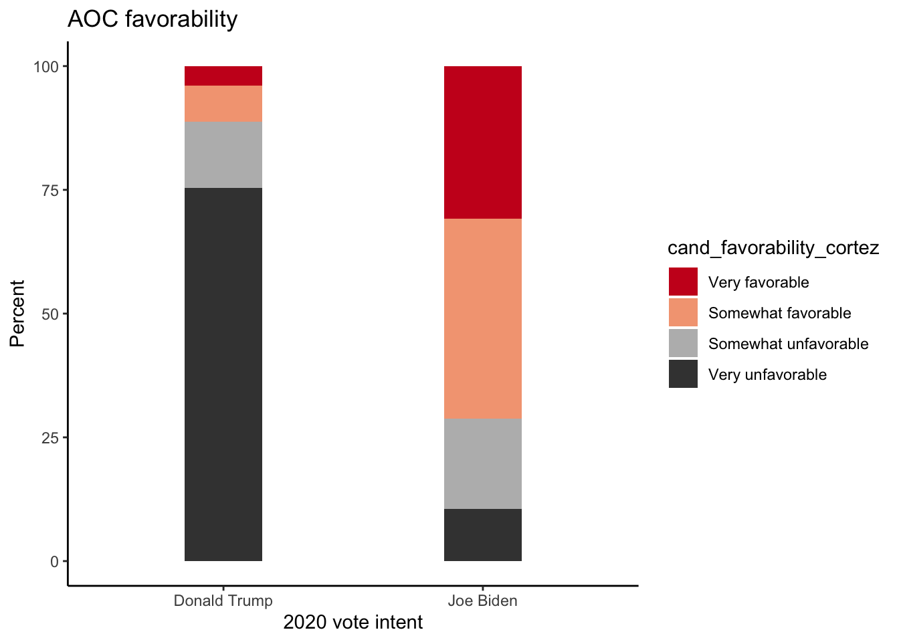
A different way to display the equivalent information would be the following:
pollster::crosstab(df = a,
x = trump_biden,
y = cand_favorability_cortez,
weight = weight,
format = "long") %>%
filter(trump_biden!="Don't Know") %>%
ggplot(aes(x= fct_reorder(trump_biden,pct),
y = pct,fill=cand_favorability_cortez)) +
geom_col(width = .3, position = position_dodge()) +
theme_classic() +
scale_fill_brewer(palette = "RdGy") +
labs(y="Percent", x = "2020 vote intent", title = "AOC favorability", fill="Evaluations\nof AOC")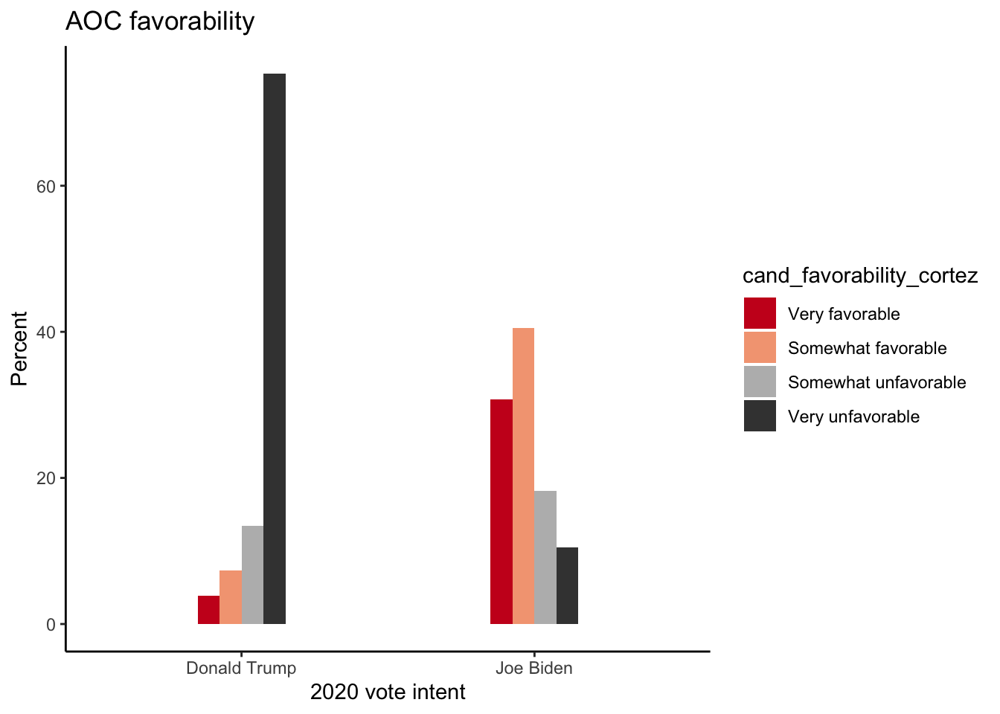
Or we can plot the (weighted) distribution of the binarized variable (aoc_Favorable), then simply use filter(aoc_Favorable==1), and again apply our friend geom_col():
pollster::crosstab(df = a,
x = trump_biden,
y = aoc_Favorable,
weight = weight,
format = "long") %>%
filter(aoc_Favorable==1, trump_biden!="Don't Know") %>%
ggplot(aes(y= fct_reorder(trump_biden,pct),
x = pct)) +
geom_col(width = .3,fill=c("blue3","firebrick2")) +
theme_classic() +
labs(x="Percent", y = "Supporters of...", title = "AOC favorability") +
geom_label(aes(label=round(pct,1)))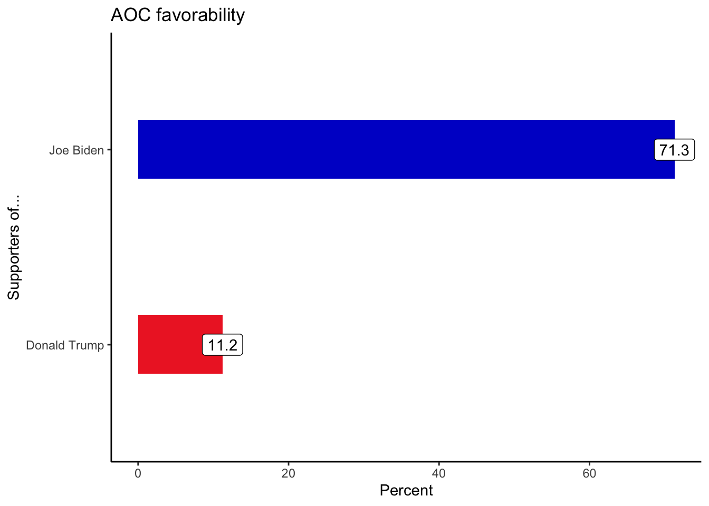
dim(a)[1] 62408 889names(a) %>% head(n=40) [1] "response_id" "start_date"
[3] "right_track" "economy_better"
[5] "interest" "registration"
[7] "news_sources_facebook" "news_sources_cnn"
[9] "news_sources_msnbc" "news_sources_fox"
[11] "news_sources_network" "news_sources_localtv"
[13] "news_sources_telemundo" "news_sources_npr"
[15] "news_sources_amtalk" "news_sources_new_york_times"
[17] "news_sources_local_newspaper" "news_sources_other"
[19] "news_sources_other_TEXT" "pres_approval"
[21] "vote_intention" "vote_2016"
[23] "vote_2016_other_text" "consider_trump"
[25] "not_trump" "primary_party"
[27] "group_favorability_whites" "group_favorability_blacks"
[29] "group_favorability_latinos" "group_favorability_asians"
[31] "group_favorability_christians" "group_favorability_socialists"
[33] "group_favorability_muslims" "group_favorability_labor_unions"
[35] "group_favorability_the_police" "group_favorability_undocumented"
[37] "group_favorability_lgbt" "group_favorability_republicans"
[39] "group_favorability_democrats" "cand_favorability_trump" # Weekly number of respondents
a %>% group_by(week) %>% tally() %>% head()# A tibble: 6 x 2
week n
<date> <int>
1 2019-07-14 3906
2 2019-07-21 5990
3 2019-07-28 6236
4 2019-08-04 6082
5 2019-08-11 5097
6 2019-08-18 7685a %>% summarise(first = min(date), last = max(date))# A tibble: 1 x 2
first last
<date> <date>
1 2019-07-18 2019-09-25a %>% group_by(week) %>% tally() %>%
ggplot(aes(x=week,y=n)) + geom_bar(stat="identity") +
labs(x="",y="Respondents",title="Weekly number of Nationscape respondents")We could choose other options for the x-axis, using scale_x_date():
a %>% group_by(week) %>% tally() %>%
ggplot(aes(x=week,y=n)) + geom_bar(stat="identity") +
labs(x="Week of the year",y="Respondents",title="Weekly number of Nationscape respondents") +
scale_x_date(date_breaks = "2 weeks", date_labels = "%W")Note that date_labels include various combinations of "%B %Y" or "%b %y", etc.:
a %>% group_by(week) %>% tally() %>%
ggplot(aes(x=week,y=n)) + geom_bar(stat="identity") +
labs(x="",y="Respondents",title="Weekly number of Nationscape respondents") +
scale_x_date(date_breaks = "1 months", minor_breaks = "1 weeks",date_labels = "%B %Y")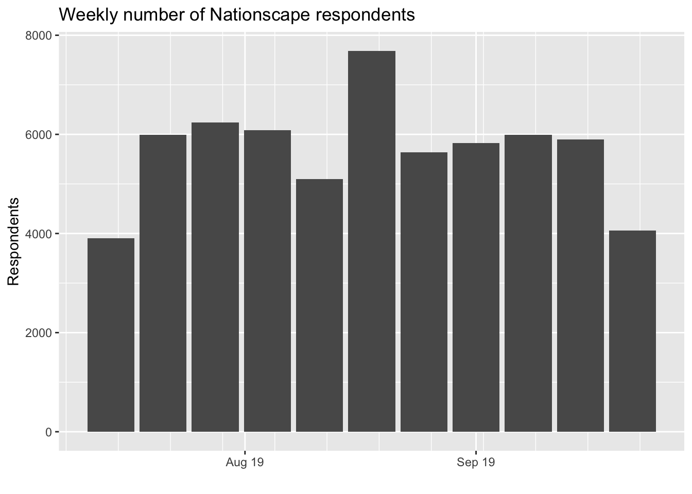
a %>% group_by(week) %>% tally() %>%
ggplot(aes(x=week,y=n)) +
geom_line() +
geom_point() +
labs(x="",y="Respondents",title="Weekly number of Nationscape respondents") +
scale_x_date(date_breaks = "1 months", minor_breaks = "1 days",date_labels = "%b %y")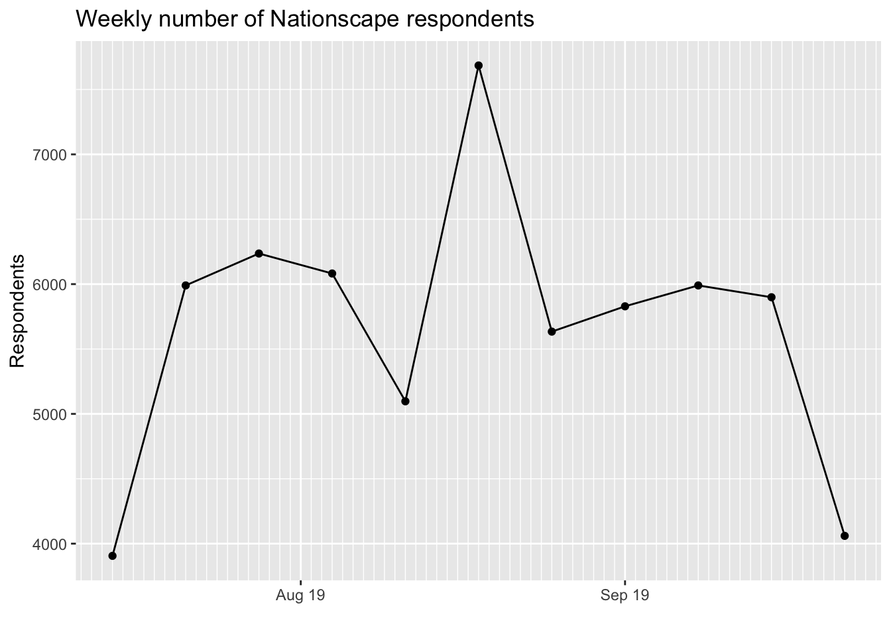
a %>% group_by(week) %>% tally() %>%
ggplot(aes(x=week,y=n)) + geom_line() + geom_point() +
labs(x="",y="Respondents",title="Weekly number of Nationscape respondents") +
scale_x_date(date_breaks = "1 months", minor_breaks = "1 days",date_labels = "%B %Y") +
ylim(c(0,8000))
pollster::crosstab(df = a, x = trump_biden,
y = aoc_Favorable,weight = weight,format = "long") # A tibble: 6 x 4
trump_biden aoc_Favorable pct n
<fct> <fct> <dbl> <dbl>
1 Joe Biden 0 28.7 18881.
2 Joe Biden 1 71.3 18881.
3 Donald Trump 0 88.8 14695.
4 Donald Trump 1 11.2 14695.
5 Don't Know 0 61.3 2989.
6 Don't Know 1 38.7 2989.pollster::crosstab(df = a, x = trump_biden,
y = aoc_Favorable,weight = weight,format = "long") %>%
filter(aoc_Favorable==1)# A tibble: 3 x 4
trump_biden aoc_Favorable pct n
<fct> <fct> <dbl> <dbl>
1 Joe Biden 1 71.3 18881.
2 Donald Trump 1 11.2 14695.
3 Don't Know 1 38.7 2989.pollster::crosstab(df = a, x = trump_biden,
y = aoc_Favorable,weight = weight,format = "long") %>%
filter(aoc_Favorable==1)
# ggplot(aes(x= ..., y = ...))pollster::crosstab(df = a, x = trump_biden,
y = aoc_Favorable,weight = weight,format = "long") %>%
filter(aoc_Favorable==1) %>%
ggplot(aes(x= trump_biden, y = pct)) + geom_col()pollster::crosstab(df = a, x = trump_biden,
y = aoc_Favorable,weight = weight,format = "long") %>%
filter(aoc_Favorable==1) %>%
ggplot(aes(x= trump_biden, y = pct)) + geom_col()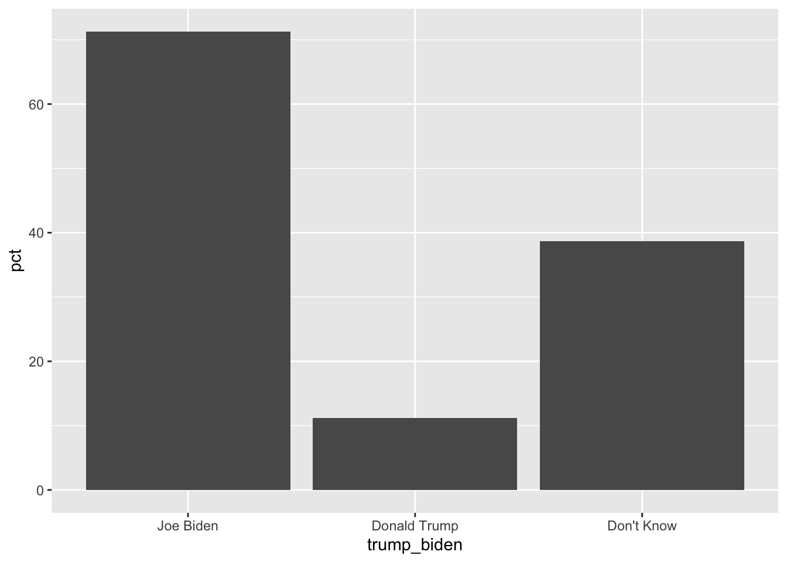
pollster::crosstab(df = a, x = trump_biden,
y = aoc_Favorable,weight = weight,format = "long") %>%
filter(aoc_Favorable==1) %>%
ggplot(aes(y= trump_biden, x = pct)) + geom_col()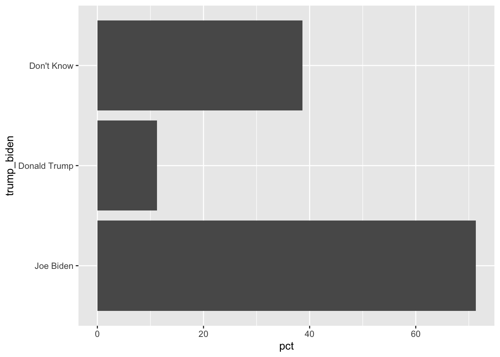
pollster::crosstab(df = a, x = trump_biden,
y = aoc_Favorable,weight = weight,format = "long") %>%
filter(aoc_Favorable==1) %>%
ggplot(aes(y= trump_biden, x = pct)) + geom_col() + theme_classic()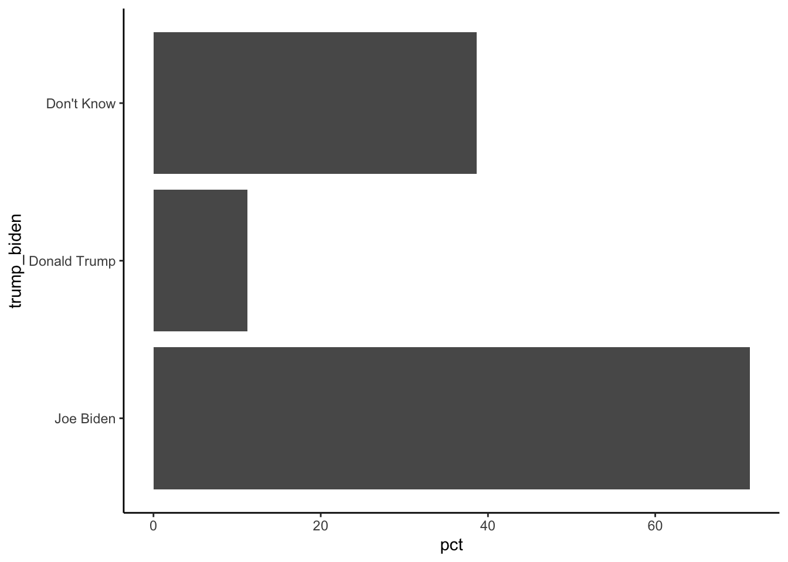
pollster::crosstab(df = a, x = trump_biden,
y = aoc_Favorable,weight = weight,format = "long") %>%
filter(aoc_Favorable==1) %>%
ggplot(aes(y= fct_reorder(trump_biden,pct),
x = pct)) + geom_col() + theme_classic() + ggtitle("AOC favorability") 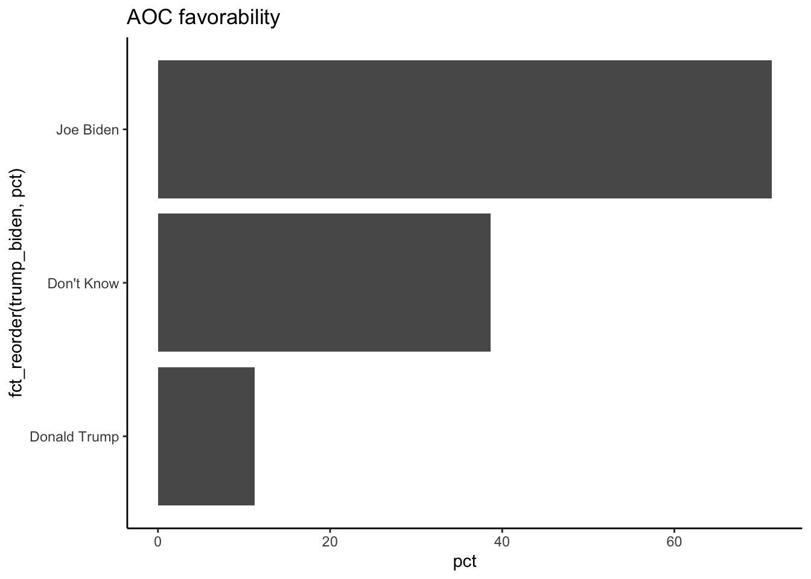
pollster::crosstab(df = a, x = trump_biden,
y = aoc_Favorable,weight = weight,format = "long") %>%
filter(aoc_Favorable==1) %>%
ggplot(aes(y= fct_reorder(trump_biden,pct),
x = pct)) + geom_col() + theme_classic() +
labs(x="Percent", y = "", title = "AOC favorability")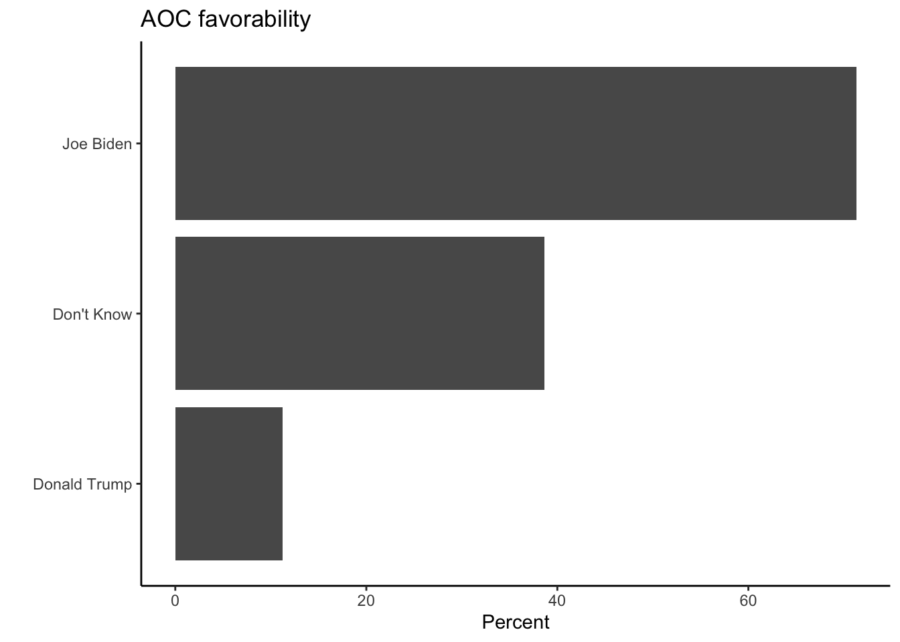
pollster::crosstab(df = a, x = trump_biden,
y = aoc_Favorable,weight = weight,format = "long") %>%
filter(aoc_Favorable==1) %>%
ggplot(aes(y= fct_reorder(trump_biden,pct),
x = pct)) + geom_col(width = .3,fill="darkorange") + theme_classic() +
labs(x="Percent", y = "", title = "AOC favorability") 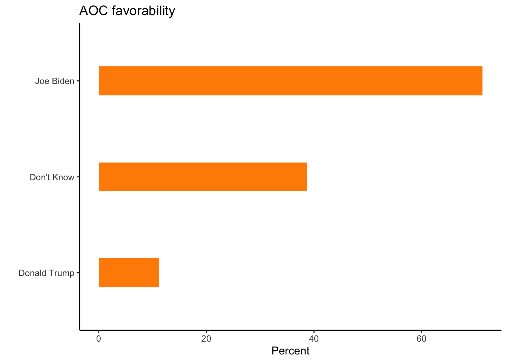
pollster::crosstab(df = a, x = trump_biden,
y = aoc_Favorable,weight = weight,format = "long") %>%
filter(aoc_Favorable==1) %>%
ggplot(aes(y= fct_reorder(trump_biden,pct),
x = pct)) + geom_col(width = .3,fill="darkorange") + theme_classic() +
labs(x="Percent", y = "", title = "AOC favorability") +
geom_label(aes(label=pct))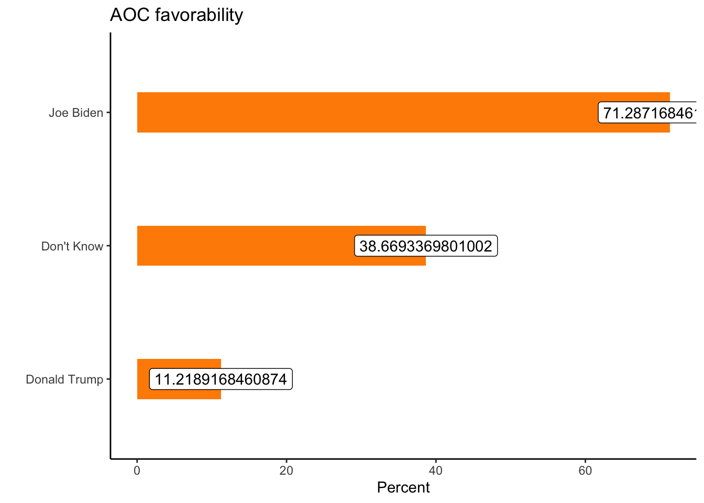
pollster::crosstab(df = a, x = trump_biden,
y = aoc_Favorable,weight = weight,format = "long") %>%
filter(aoc_Favorable==1) %>%
ggplot(aes(y= fct_reorder(trump_biden,pct),
x = pct)) + geom_col(width = .3,fill="darkorange") + theme_classic() +
labs(x="Percent", y = "", title = "AOC favorability") +
geom_label(aes(label=round(pct,1)))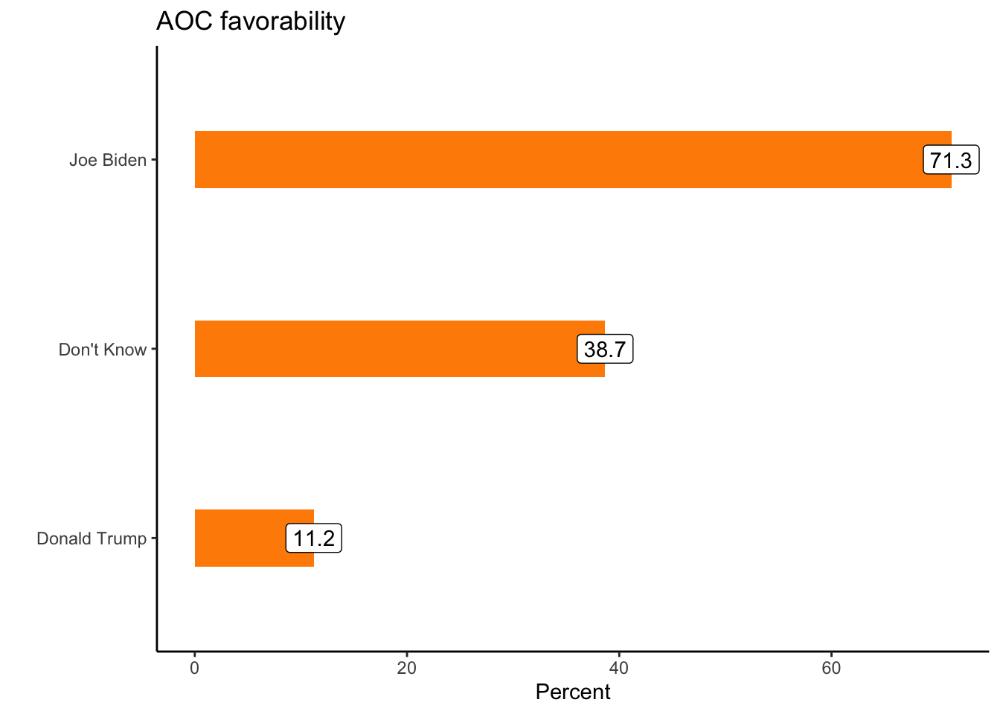